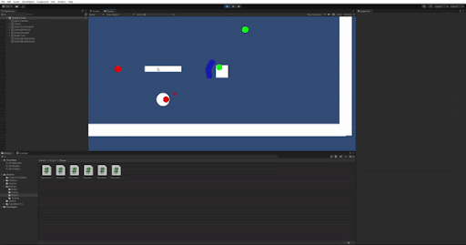
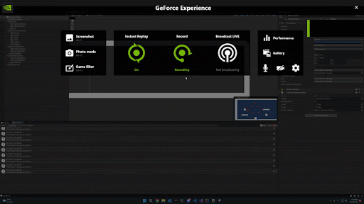

Weekly PPJ Entries for Ricochet Ronin
Met team members and had team meetings (2hrs)
Researched game mechanics and development ideas (1hr)
Researched unity tutorials for advanced development (1hr)
Total hours worked: 5hrs
Team is organized and efficient
Was able to choose role in team
Fun game concept
Team was working well together
Lack of work for the first week as a developer
Begin development of game
Art, Design, Week 1, Daniel McGahey
Camera tracking of character - 2 hrs
Object Pooling - 5 hrs
Met with group for integration and dev timelines - 1 /2 hrs
Total # of hours this week - 8 ½ hrs
Was able to make progress with game development
Was able to make changes that helped progress other teammates changes
Took longer than expected to complete some tasks
Work on cutscene and other development tasks
Cutscenes (Not yet finished) - 3 hrs
Camera tracking rework (still a WIP) - 3 hrs
Before Camera Tracking
After Camera Tracking
Happy with improvements to the camera tracking
Still need to polish the camera and cutscenes
Continues work on cutscenes and polish camera tracking
Total # of hours this week - 6 hrs
Redid/reworked object pooling (Previously got lost/overwritten by git) - 1hr
Researched Cinemachine and how to do cutscenes using it - 3.5hrs
Started working on cutscene using cinemachine - 1hr
Object pooling finally merged into team github.
Behind on cutscenes
Complete cutscenes using cinemachine
Total # of hours worked - 5.5hrs
More Cinemachine research and small amount of development on it - 3 hrs
Was able to do some research and a small amount of dev work in
Wasn’t able to work on much this week due to health issues
Complete cutscenes using cinemachine